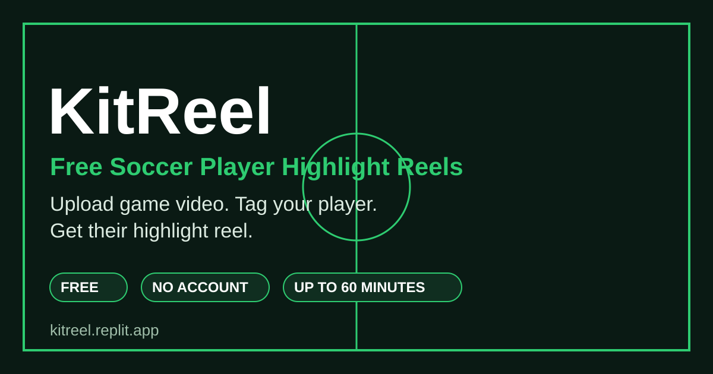

KitReel: Turn a Full Soccer Game Into Your Kid's Highlight Reel

If you have a young soccer player in your life, you probably have the same thing I kept seeing: a phone or camera full of long game videos that nobody ever watches again. Your kid's best moments are in there somewhere, buried in 60 minutes of footage. Finding them used to mean hours of scrubbing and editing by hand. So I built KitReel to do that work for you.
The short version
- Upload your game video.
- Pick the team color.
- Tag your player.
- Download your reel.
The problem: the highlights are buried
A youth soccer game might run an hour. Your player might have the ball for a few minutes of it. Their best pass, their hardest run, the goal that made their whole week — those moments are seconds long, and they are scattered through the whole video.
Most parents I know have good intentions. They film the game, they mean to cut the good parts out later, and then life gets busy. The video sits on a phone. Grandparents never see the goal. And the player never gets to watch themselves shine, which is a shame, because few things build a young athlete's confidence like seeing proof of what they did out there.
Manual editing fixes that, but it takes real time and a little skill with editing software. KitReel is my attempt to remove that excuse entirely.
What KitReel does
KitReel takes a longer soccer game video and makes a highlight reel of one specific player, automatically, instead of you having to do all the editing manually. Upload game video, pick a team, tag your player, and get their highlight reel.
- Built for one player at a time. This is not a reel of the whole game. It is your player's reel.
- Long videos welcome. MP4 files up to 2 GB and up to 60 minutes, so a full youth game fits.
- Your video stays on your device. It is never uploaded. That matters when the video is of your kids.
- No account needed. No sign-up, no password, nothing to manage.
- Free to use. Tips help keep it running, if you find it useful.
How to make a highlight reel with KitReel
1. Upload game video
Drop your game video onto the page, or tap to choose a file. An MP4 up to 2 GB and up to 60 minutes works.
2. Pick the team color
Tell KitReel which team your player is on by picking their team color.
3. Tag your player
Tag the player you want the reel to follow. This is the step that turns a team video into one player's story.
4. Download your reel
Download the finished highlight reel and share it with the people who will actually want to watch it: family, friends, coaches, and the player themselves. Share links expire automatically.
Why this matters more than it sounds
A highlight reel is not just a shorter video. For a young player, it is a record of effort paying off. They can watch their best moments again, show a grandparent who lives far away, and walk onto the field next week a little taller.
For parents, it turns an hour of raw footage you would never rewatch into a few minutes you will watch again and again, and actually send to people. Those clips become the family keepsakes. The full game file rarely does.
You do not need to be technical, and you do not need editing software. If you filmed a game recently, you already have everything you need to try it.
Who it's for
- Parents of young soccer players who film games on their phone
- Grandparents and family who cannot be at the game but want to see the moments
- Coaches who want a quick reel of a specific player
- Players who want to watch their own best plays back
- Anyone sitting on old game videos they have been meaning to edit for months
A few honest notes
- KitReel is built for soccer. That is the sport it is made for today.
- Only use videos you recorded or have permission to use.
- Videos are MP4, up to 2 GB and up to 60 minutes.
- Your video stays on your device. It is never uploaded.
- KitReel is free to use. A tip through the Donate button helps keep it running.
Frequently asked questions
Is KitReel really free?
Yes. KitReel is free to use. Tips help keep it running.
Do I need an account?
No. There is no sign-up. Just open the page and add your video.
Does my video get uploaded somewhere?
No. Your video stays on your device. It is never uploaded.
What kind of video can I use?
An MP4 game video, up to 2 GB and up to 60 minutes. Only use videos you recorded or have permission to use.
Can I make a reel for more than one player?
KitReel makes a reel of one specific player at a time. Run it again and tag a different player to make theirs.
Got a game video sitting on your phone? Pick your favorite player, run it through KitReel, and send them their highlights. It is free, it takes minutes instead of an evening of editing, and I think it will make their day.